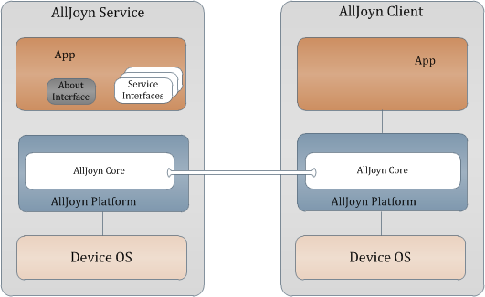
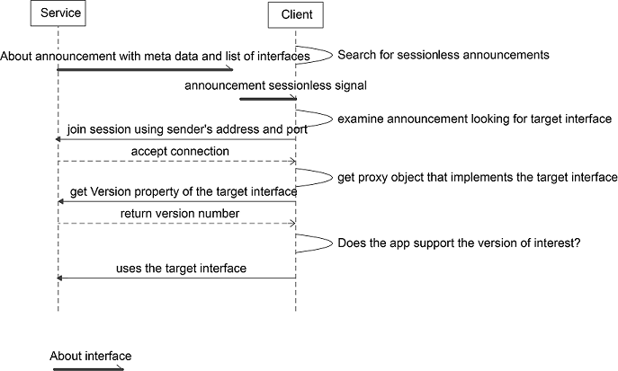

About Feature Interface Definitions
Release History
To access a previous version of this document, click the release version link below.
| Release version | Date | What changed |
|---|---|---|
| 14.02 | 2/28/2014 | About interface version 1 was added. |
| 14.06 | 6/30/2014 | No updates. |
| 14.06 Update 1 | 9/29/2014 |
|
| 14.12 | 12/17/2014 |
|
Definition Overview
The About interface is to be implemented by an application on a target device. This interface allows the app to advertise itself so other apps can discover it. The following figure illustrates the relationship between a client app and a service app.

Figure: About feature architecture within the AllJoyn™ framework
NOTE: All methods and signals are considered mandatory to support the AllSeen Alliance Compliance and Certification program.
Discovery
A client can discover the app via an announcement which is a sessionless signal containing the basic app information like app name, device name, manufacturer, and model number. The announcement also contains the list of object paths and service framework interfaces to allow the client to determine whether the app provides functionality of interest.
In addition to the sessionless announcement, the About interface also provides the on-demand method calls to retrieve all the available metadata about the app that are not published in the announcement.
Discovery Call Flows
Typical discovery flow
The following figure illustrates a typical call flow for a client to discover a service app. The client merely relies on the sessionless announcement to decide whether to connect to the service app to use its service framework offering.

Figure: Typical discovery flow (client discovers a service app)
Nontypical discovery flow
The following figure illustrates a call flow for a client to discover a service app and make a request for more detailed information.

Figure: Nontypical discovery call flow
Error Handling
The method calls in the About interface will use the AllJoyn error message handling feature (ER_BUS_REPLY_IS_ERROR_MESSAGE) to set the error name and error message.
| Error name | Error message |
|---|---|
| org.alljoyn.Error.LanguageNotSupported | The language specified is not supported |
About Interface
| Interface name | Version | Secured | Object path |
|---|---|---|---|
org.alljoyn.About |
1 | no | /About |
Properties
| Property name | Signature | List of values | Read/Write | Description |
|---|---|---|---|---|
| Version | q |
Positive integers | Read Only | Interface version number |
Methods
The following methods are exposed by a BusObject that implements
the org.alljoyn.About interface.
a{sv} GetAboutData('s')
Message arguments
| Argument | Parameter name | Signature | List of values | Description |
|---|---|---|---|---|
| 0 | languageTag |
s |
IETF language tags specified by RFC 5646. | The desired language. |
Reply arguments
| Argument | Parameter name | Return signature | Description |
|---|---|---|---|
| 0 | AboutData |
a{sv} |
A dictionary of the available metadata fields. If language tag is not specified (i.e., ""), metadata fields based on default language are returned. |
Error reply
| Error | Description |
|---|---|
org.alljoyn.Error.LanguageNotSupported |
Returned if a language tag is not supported |
Description
Retrieve the list of available AboutData fields based on the language tag. see About data interface fields
About data interface fields
The following table lists the names of the metadata fields. The fields with a yes value in the Announced column will also be published via the Announce signal. See Signals for more information.
| Field name | Mandatory | Announced | Localized | Signature | Description |
|---|---|---|---|---|---|
AppId |
yes | yes | no | ay |
A 128-bit globally unique identifier for the application. The AppId shall be a universally unique identifier as specified in RFC 4122. |
DefaultLanguage |
yes | yes | no | s |
The default language supported by the device. Specified as an IETF language tag listed in RFC 5646. |
DeviceName |
no | yes | yes | s |
Name of the device set by platform-specific means (such as Linux and Android). |
DeviceId |
yes | yes | no | s |
Device identifier set by platform-specific means. |
AppName |
yes | yes | yes | s |
Application name assigned by the app manufacturer (developer or the OEM). |
Manufacturer |
yes | yes | yes | s |
The manufacturer's name of the app. |
ModelNumber |
yes | yes | no | s |
The app model number. |
SupportedLanguages |
yes | no | no | as |
List of supported languages. |
Description |
yes | no | yes | s |
Detailed description expressed in language tags as in RFC 5646. |
DateOfManufacture |
no | no | no | s |
Date of manufacture using format YYYY-MM-DD (known as XML DateTime format). |
SoftwareVersion |
yes | no | no | s |
Software version of the app. |
AJSoftwareVersion |
yes | no | no | s |
Current version of the AllJoyn SDK used by the application. |
HardwareVersion |
no | no | no | s |
Hardware version of the device on which the app is running. |
SupportUrl |
no | no | no | s |
Support URL (populated by the manufacturer). |
a(oas) GetObjectDescription()
Message arguments
None.
Reply arguments
| Argument | Parameter name | Return signature | Description |
|---|---|---|---|
| 0 | objectDescription |
a(oas) |
Return the array of object paths and the list of supported interfaces provided by each object. |
Description
Retrieve the object paths and the list of all interfaces implemented by each of objects.
Signals
The following signals are emitted by a BusObject that implements the
org.alljoyn.About interface.
Announce('qqa(oas)a{sv}')
Announce signal is a Sessionless signal
Message arguments
| Argument | Parameter name | Signature | List of values | Description |
|---|---|---|---|---|
| 0 | version |
q |
positive | Version number of the About interface. |
| 1 | port |
q |
positive | Session port the app will listen on incoming sessions. |
| 2 | objectDescription |
a(oas) |
Populated based on announced interfaces | Array of object paths and the list of supported interfaces provided by each object. |
| 3 | aboutData |
a{sv} |
array of key/value pairs | All the fields listed in About data interface fields with a yes value in the Announced column are provided in this signal. |
AllJoyn Introspection XML
<node name="/About" xmlns:xsi="http://www.w3.org/2001/XMLSchema-instance"
xsi:noNamespaceSchemaLocation="http://www.allseenalliance.org/schemas/introspect.xsd">
<interface name="org.alljoyn.About">
<property name="Version" type="q" access="read"/>
<method name="GetAboutData">
<arg name="languageTag" type="s" direction="in"/>
<arg name="aboutData" type="a{sv}" direction="out"/>
</method>
<method name="GetObjectDescription">
<arg name="objectDescription" type="a(oas)" direction="out"/>
</method>
<signal name="Announce">
<arg name="version" type="q"/>
<arg name="port" type="q"/>
<arg name="objectDescription" type="a(oas)"/>
<arg name="metaData" type="a{sv}"/>
</signal>
</interface>
</node>
Icon Interface
| Interface name | Version | Secured | Object path |
|---|---|---|---|
org.alljoyn.Icon |
1 | no | /About/DeviceIcon |
Properties
| Property name | Signature | List of values | Read/Write | Description |
|---|---|---|---|---|
Version |
q |
Positive integers | Read Only | Interface version number |
MimeType |
s |
The Mime type corresponding to the icon's binary content | Read Only | Mime type for the icon |
Size |
u |
The size in bytes of the icons binary content | Read Only | Size of the Icon |
Methods
The following methods are exposed by a BusObject that implements
the org.alljoyn.Icon interface.
s GetUrl()
Message arguments
None.
Reply arguments
| Argument | Parameter name | Return signature | Description |
|---|---|---|---|
| 0 | url |
s |
The URL if the icon is hosted on the cloud |
Description
Retrieve the URL of the icon if the icon is hosted on the cloud.
ay GetContent()
| Argument | Parameter name | Return signature | Description |
|---|---|---|---|
| 0 | content |
ay |
The binary content for the icon |
Signals
None.
AllJoyn Introspection XML
<node name="/About/DeviceIcon"
xmlns:xsi="http://www.w3.org/2001/XMLSchema-instance"
xsi:noNamespaceSchemaLocation="http://www.alljoyn.org/schemas/introspect.xsd">
<interface name="org.alljoyn.Icon">
<property name="Version" type="q" access="read"/>
<property name="MimeType" type="s" access="read"/>
<property name="Size" type="u" access="read"/>
<method name="GetUrl">
<arg type="s" direction="out"/>
</method>
<method name="GetContent">
<arg type="ay" direction="out"/>
</method>
</interface>
</node>